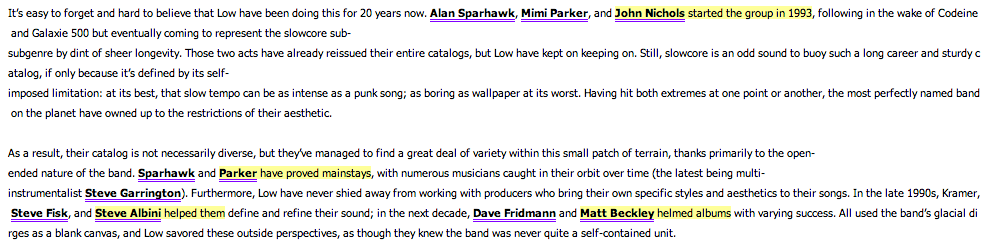
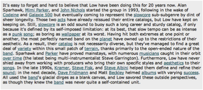
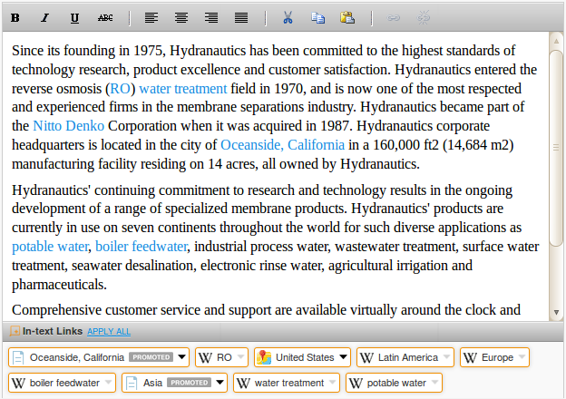
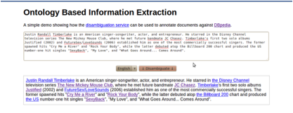
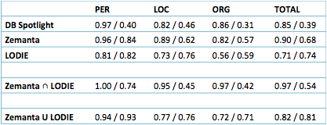
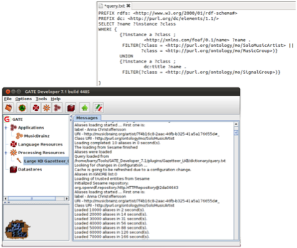
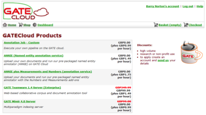

The previous tools worked on data that was already in some tabular or relational structure. Work carried out by the tools largely involved transforming this existing structure to a triple structure as well as some mapping and interlinking. Text is more open and ambiguous and involves more than transformation. As we shall see later, text extraction is only correct to some level of precision and recall.
OpenCalais [27] can be used to automatically identify entities from text. OpenCalais uses natural language processing and machine learning techniques to identify entities, facts and events. OpenCalais is difficult to customise and has variable domain-specific coverage.

Figure 37: OpenCalais.
DBpedia Spotlight [28] can be used to identify named entities in text and associate these with DBpedia URIs. In the snapshot of Figure 3.38, recognised entities in the submitted text have been hyperlinked to their DBpedia URIs. DBpedia Spotlight is not easy to customise or extend and is currently only available in English.

Figure 38: DBpedia Spotlight.
Zemanta [29] is another general-purpose semantic annotation tool. Zemanta is used by bloggers and other content publishers to find links to relevant articles and media. Best results require bespoke customization.

Figure 39: Zemanta.
GATE (General Architecture for Text Engineering) [30] is an open-source framework for text engineering. GATE started in 1996 and has a large developer community. GATE can be more readily customized for text annotation in different domains and for different purposes. GATE is used worldwide to build bespoke solutions by organisations including the Press Association and National Archive. Information extraction is supported in many languages. GATE can also parse text as well as recognise entities and can therefore be used to identify entities depending on their function in the sentence. For example GATE could be used to extract an entity only when used as the noun phrase, rather than the verb phrase, of the sentence.
LODIE [31] is an application built with GATE using DBpedia. LODIE uses Wikipedia anchor texts, disambiguation pages and redirect pages to help find alternative versions of things.

Figure 40: LODIE.
Precision and recall measures can be used to compare text annotation tools. Precision and recall are both values from 0 to 1. Precision indicates what proportion of annotations are correct. Recall indicates what proportion of possible correct annotations in the text are identified by the tool.
Figure 3.41 shows precision and recall figures for these tools. Precision and recall figures are shown in pairs, precision on the left, recall on the right separated by a slash. Precision and recall are shown for types of entity (person, location and organisation) as well as in total. We see that DBpedia Spotlight has relatively good precision but relatively low recall, identifying 39% of entities in the text. Zemanta has similar precision but higher recall. LODIE has the highest recall but lower precision.
Good results can also be achieved by combining the methods. Only annotating entities suggested by both Zemanta and LODIE (i.e. the intersection of Zemanta and LODIE) gives very high precision. The union of Zemanta and LODIE gives high recall but lower precision.

Figure 41: Comparison of DBpedia Spotlight, Zemanta and LODIE.
An alternative to the generic services provided by DBpedia Spotlight and Zemanta is to build a GATE processing pipeline specifically for your domain. For this we take an RDF dataset and use this to produce what is called a GATE Gazetteer, which is a list of entities in a domain and associated text labels used to refer to those entities. We can produce a gazetteer using the RDF data produced from the R2RML transformation of the MusicBrainz NGS Relational Database (see section 3.7.2). A SPARQL endpoint to this data can be used to populate a custom gazetteer for the music domain. For example, the query in Figure 3.43 returns solo artists and music groups and their foaf:name. It also returns albums (represented by the SignalGroup class in the music ontology) and their dc:title. This provides a vocabulary of artists and albums with associated labels that can be used in the gazetteer.

Figure 42: Producing a GATE Gazeteer.
A GATE pipeline can be run locally or uploaded to the GATE cloud. Once set up, text can be submitted and then annotated using the MusicBrainz data. The annotated text can then be output in a format such as RDFa.

Figure 43: GATE Cloud.